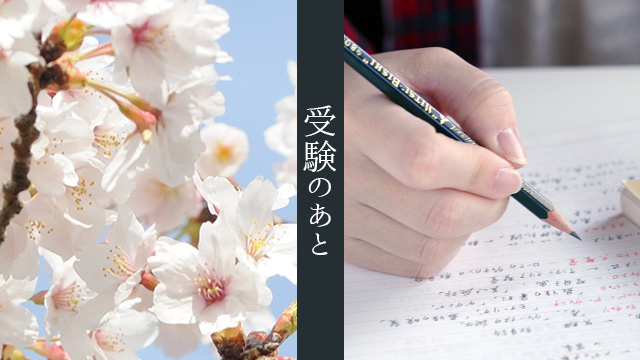

3月に入り長かった受験シーズンも終わりを迎えようとしています。
受験生のみならず親の皆さんも一年間本当にお疲れ様でした。
「やっと終わった」「ホッとした」という思いの方も多いのではないでしょうか。昨年も書きましたが受験はむしろ子どもより親の方が大変かもしれません。（⇒ココ）
実は私の息子も高校受験生でした。
息子は第一志望こそ不合格でしたがそれでも行きたかった学校の一つに何とか合格でき満足そうです。
11月までハードな課外活動があり、受験勉強との両立に苦しんだようですが精一杯やり切ったので後悔はなさそうです。
まぁ、そういうことで私も親の一人としてホッとしている次第。
親としては子どもの受験を見守るしかないわけですが、それでも説明会に出たり願書の手配をしたりと結構大変だったわけで、精神的疲労は子どもに勝るとも劣らないと言えるでしょう。
改めて受験生をお持ちの親の皆さんお疲れ様でした。
握っているその手を放しましょう
ところで、いつも私が言ってることですが高校受験というのはやはり子どもが成長する一つのきっかけなのだと、今回我が子の受験でその思いを強くしました。
受験を区切りに親離れ子離れが加速する。
これは親も子どもを一人の「人格ある大人」と認めて、今までのように介入しないという方針を持たなくてはいけないわけで、そのための一つのきっかけ（イベント）として受験があったのだと納得できるかどうかです。
まず親の側がそのことを自覚する必要があるというのが私の考えです。特に母親はなかなか我が子の手を離したがらない。
また息子の話に戻りますが、先日息子と妻が入学する高校の制服の採寸に連れ立って都内のデパートへ行きました。
夕食は二人でどこかで済ませるというので「今晩は次男と二人きりの夕食かぁ」と覚悟していたところ、妻から「これから帰る」というメールが届いたのです。
「あれ、今日は二人で外食して来るはずでは…？」
と返すと、息子は友人と食事するからと一人で帰ってしまったという話。
息子いわく「お母さんと夕食するくらいなら友だちと食べにいく。買いたいクツもあるし…」という妻のメールを読んで私は思わず笑ってしまいました。
つい笑ってしまったのは「まっ、その気持ち分かるよな」というものと、入試が終わった途端手のひらを返したような息子の変ぼうぶりと、さらに取り残されてア然としている妻の表情が浮かびおかしかったからです。
まぁ、親はいつまでも我が子を「子ども」だと思っていたいものです。実際どこへ行くのも手をつないで歩いたのが、つい最近のことにしか思えなかったりするものです。
しかし、そんな子どもは着実に大人へのステップを歩んでいる。思春期になれば本当はとっくに手を離す時期なのに、そして頭ではそのことを分かっているつもりでも「親の本能」がそれを認めない。
昔は14～15歳になれば親元を離れ自立の道を進んだわけで、子どものほうもこの時期は自立の欲求が高まってくるのです（江戸時代の成人儀式である元服は15歳）。（⇒ココ）
そんな15歳にとって高校受験は「親離れ＝自立」を促す後押しのようなものかも知れません。まっ、受験も成長への通過儀礼と見なすことができるわけですね。（⇒ココ）
現代は高校生になったからといって完全自立ができるわけではありません。
それでもこの高校受験を一つの区切りと考えて少しずつでも子どもを手放していくことが必要ではないでしょうか。
さもないと大学生になっても、社会人になってからさえ親に依存して生きる「自立できないおっさん（おばさん）」(笑)が出来上がってしまうかも知れません。（笑い事ではなくそんな中年子どもが実際に増えているのです）
子どもが親の庇護を必要とせずドンドン成長していく。
親は嬉しい反面取り残されたような淋しさを感じる。
でも淋しいくらいがちょうど良いのかも知れません。
その日、夜遅く帰宅した息子が「やべ～クツを買う金もらい忘れたから買えなかったぁ」と叫んでいるのが聞こえ、相変わらずドジな奴だと思いながらも、頼りなかった我が子がそれでも順調に成長しているのだなと実感した次第です。
握っている手を離すのは親のほうから
妻も実感したようです。